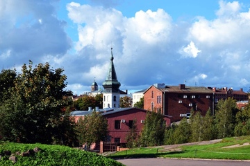

Цена: от 1900 ₽.
В 122 км от Санкт-Петербурга разместился городок Выборг, один из красивейших городов России с многовековой историей. Основали Выборг шведы задолго до Северной столицы. Турне Королевской дорогой позволит каждому прочувствовать историческую атмосферу Средневековья. Экскурсия охватывает достопримечательности Старого города, Замковый остров с Выборгским замком, чарующие пейзажи скального парка Монрепо.
Самостоятельная поездка-экскурсия в Выборг на 1 день из Санкт-Петербурга – идея соблазнительная, но очень замороченная. Придется заранее разработать маршрут и тщательно подготовиться. Но есть и другой вариант – автобусное путешествие в Выборг в составе экскурсионной группы. Такой тур имеет ряд преимуществ:
Группа туристов собирается возле станции метро «Площадь Восстания». Следующая остановка в Зеленогорске, где гид кратко расскажет о кирхе Преображения Господня. После этого можно будет прогуляться в парке Монрепо в Выборге в сопровождении экскурсовода. Следующая остановка в Старом городе. По окончании тура выделяется примерно 2 часа для детального изучения Выборгского замка и его окрестностей. В Санкт-Петербург трансфер после посадки из Выборга прибывает в 22:10.